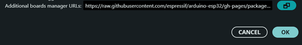
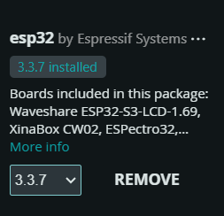
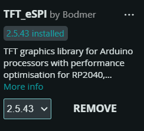
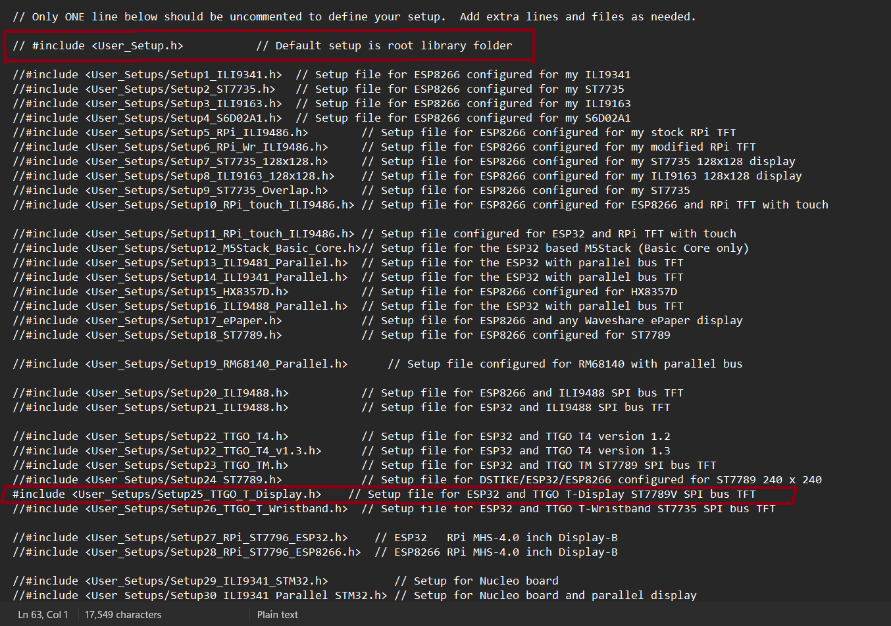

Préparer son environnement¶
Intro¶
Cette section décrit l'environnement logiciel nécessaire pour programmer la console ArduBoy.
Le développement est réalisé à l'aide de l'IDE Arduino et de plusieurs bibliothèques permettant de gérer l'affichage graphique, les boutons et la logique des jeux.
Avant de pouvoir compiler et téléverser le programme dans la carte ESP32 TTGO T-Display, il est nécessaire de configurer correctement l'environnement de développement.
Avant toute chose ...¶
Avant de programmer la carte ESP32 TTGO T-Display, il est nécessaire de préparer correctement l’environnement de développement.
Télécharger L'IDE Arduino¶
Il faut commencer à télécharger l'environnement de développement (IDE) Arduino dont on aura besoin pour programmer la carte.
Allez sur ce lien de téléchargement : Télécharger Arduino IDE
Ajouter le support de l'ESP 32¶
Après s'être assuré que l'IDE est installé, y ajouter le support de l'ESP 32. Allez dans l'onglet Fichiers, sélectionner Préférences et cliquez sur la barre des URL de gestionnaires de cartes et collez ce lien:
Comme décrit sur cette image:
{kind=link}

Installer le gestionnaire de cartes¶
Après avoir ajouté le lien, on valide et on va dans Outils, puis on choisit Type de carte et on choisit le Gestionnaire de cartes puis on cherche ESP 32 puis on installe la dernière version disponible (actuellement 3.3.7).
RECOMMANDATION
Je vous recommande à cette étape de vous munir d'une connexion internet de bon débit sinon vous pourrez ne pas évoluer et être bloqué à cette étape.
{kind=link}

Installer la bibliothèque TFT_eSPI¶
Après avoir installé le gestionnaire de carte de l'ESP 32, allez dans Outils puis sélectionner Gérer les bibliothèques et chercher TFT_eSPi dans la barre de recherche et installer la derniére version disponible (actuellement la version 2.5.43).
{kind=link}

Configurer la bibliothèque TFT_eSPI pour sa carte TTGO T display¶
- Dans l'explorateur de fichiers sur votre ordinateur, consultez le répertoire par défaut où sont stockés vos fichiers. C'est bien:
Si vous aviez changé votre répertoire par défaut, vous pouvez le consulter dans Préférences, dans l'emplacement du carnet de croquis.
-
Allez dans le dossier Libraries et chercher TFT_eSPI et ouvrir le fichier nommé User_Setup_Select avec n'importe quel éditeur de code. Pour débutant, ouvrez-le avec Bloc-Notes.
-
Commentez la ligne (généralement la ligne 30):
Pour commenter une ligne, ajoutez simplement les caractères // au début de la ligne.
- Décommentez cette ligne (généralement la ligne 30):
Ceci permettra de spécifier que c'est ce type de module qui sera programmé lors de l'utilisation de la bibliothèque.
{kind=link}

- Redémarrez l'IDE Arduino.
Sélectionner la bonne carte¶
Dans Outils, choisissez la bonne carte esp 32 et sélectionnez la carte TTGO T1.
Voilà, votre IDE ARDUINO pour l’esp32 TTGO T1 est configuré !